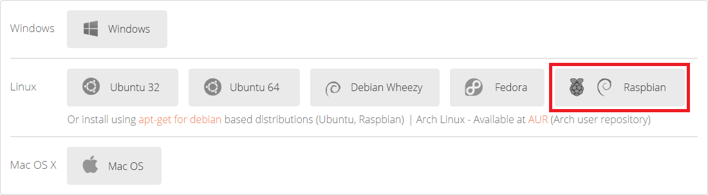
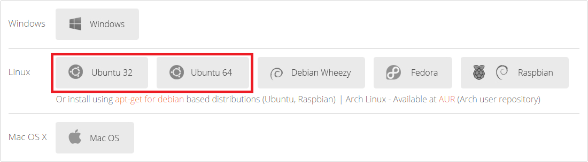

The new Raspberry Pi 2
- 900MHz quad-core ARM Cortex-A7 CPU (~6x performance)
- 1GB LPDDR2 SDRAM (2x memory)
- Complete compatibility with Raspberry Pi 1
Last Monday, the new Raspberry Pi 2 arrived. It can run the full range of ARM GNU/Linux distributions, including Snappy Ubuntu Core, as well as Microsoft Windows 10. In this case, we have installed Raspbian.
When you turn on the Raspberry Pi 2, one can see it works better than the Raspberry Pi 1, we never thought we could surf the web, talk through Hangouts and code at the same time without needing more power. The improvements in speed and fluency of the new Raspberry Pi are just amazing. Follow us in this mini-tutorial on how to configure the flashy new Raspberry Pi 2 with biicode.
Step 1: Install native or cross compilation biicode.
Native biicode
Of course, the latest version of biicode works perfectly with the Raspberry Pi 2. In fact we updated the setup:cpp in order to install properly all the tools and provide all the power of biicode to program it.
Download the Raspbian version
Just download biicode’s Raspbian versión from the downloads page.

Install biicode and the developer tools
1 2 3 | cd Downloads dpkg -i bii-debian-armv6<version>.deb bii setup:cpp |
Cross compilation with biicode.
Download the Linux version
If you want to use the default crossbuild tools, you need to use a Debian distribution. Download biicode’s Ubuntu versión from the downloads page.
If you want to use Windows, you have an example about how to make a cross compilation with biicode from Windows too.

Install biicode and the development tools.
1 2 3 | cd Downloads dpkg -i bii-debian-ubuntu<version>.deb bii setup:rpi |
If you have never used biicode to make a cross compilation or you don’t know what is it, you can read the biicode support for Raspberry Pi cross compilation section of our documentation.
Raspberry Pi 2 vs Raspberry Pi 1
(Native Compilation)
First test: OpenCV
The first test compared how much time was spent compiling a big library in a Raspberry Pi 1 and a Raspberry Pi 2. The Raspberry Pi 2 spent more than 30 minutes however, the Raspberry Pi 1 spent more than 1 hour and it had only compiled 39% of the library, so we decided to stop the process in order to continue with more productive things.
Raspberry Pi 2
1 2 3 4 5 6 7 8 9 10 11 12 | bii open diego/opencv ... time bii cpp:build ... Building: cmake --build . real 33m36.365s user 92m1.850s sys 2m51.010s |
Raspberry Pi 1
1 2 3 4 5 6 7 8 9 10 11 12 13 14 15 | bii open diego/opencv ... time bii cpp:build ... [ 39%] Built target IlmImf Scanning dependencies of target pch_Generate_opencv_ts [ 39%] Generating precomp.hpp [ 39%] Generating precomp.hpp.gch/opencv_ts_Release.gch real 85m7.442s user 42m1.970s sys 4m13.870s |
Second test: libfreenect
In this test, we compiled the library to use the kinect, libfreenect, and executed the example to see the difference between the two Raspberries Pi.
In the compilation test, the Raspberry Pi 2 spent 42 seconds and the Raspberry Pi 1 spent 2 min (120 seconds), so the Raspberry Pi 2 was 2.85 times faster than the Raspberry Pi 1.
Raspberry Pi 2
1 2 3 4 5 6 7 8 9 10 11 | $ bii open david/libfreenect $ bii cpp:configure $ time bii cpp:build ... [100%] Built target david_libfreenect_wrappers_cpp_cppview real 0m42.068s user 0m29.940s sys 0m2.890s |
Raspberry Pi 1
1 2 3 4 5 6 7 8 9 10 11 | $ bii open david/libfreenect $ bii cpp:configure $ time bii cpp:build ... [100%] Built target david_libfreenect_wrappers_cpp_cppview real 2m0.091s user 1m28.790s sys 0m6.500s |
Last test: WiringPi
The last test tried to compile WiringPi in the Raspberry Pi 2. The previous version of the WiringPi was obsolete and we needed to update it with the last commits of the official Git repository, git://git.drogon.net/wiringPi, It was easy and painless.
If you want to use the last version, it’s under my namespace david/WiringPi and it’s in GitHub too.
1 2 3 4 5 6 7 8 9 10 11 12 13 14 15 16 17 18 19 20 21 22 23 | #include <stdio.h> #include <david/WiringPi/wiringPi/wiringPi.h> // LED Pin - wiringPi pin 0 is BCM_GPIO 17. #define LED 0 int main (void) { printf ("Raspberry Pi blink\n") ; wiringPiSetup () ; pinMode (LED, OUTPUT) ; for (;;) { digitalWrite (LED, HIGH) ; // On delay (500) ; // mS digitalWrite (LED, LOW) ; // Off delay (500) ; } return 0 ; } |

So the conclusion is that the new Raspberry Pi 2 is a brilliant piece of hardware that has considerably improved its main benchmarks. Now that we know what we have between our hands we will start thinking what use should we give it at biicode. If you want to propose any kind of project or experiment please drop the idea in the comments section.
We hope you enjoy this post and don’t forget to check our complete C++ documentation! If you’ve any doubt, contact us through our forum or ask directly in Stackoverflow
Related Posts